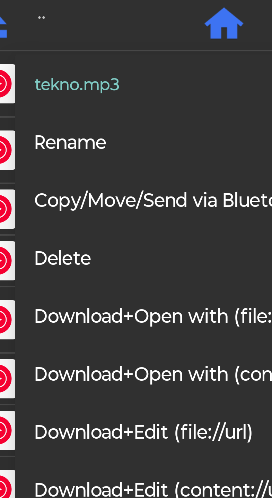

NAS-i helin: failivalik tõrkus, SFTP-ga pääses failini
Androidi telefonis sooviti NAS-is olevat helifaili kontakti helinaks määrata. Material Filesi loend vilkus ning kopeerimisel tuli kasutaja teatel vale fail. VLC suutis heli mängida, kuid see ei määranud kontakti helinat.
- Prooviti failile ligipääsu ja kopeerimist Material Filesiga; kasutaja kirjeldas vale faili kopeerimist ja vilkuvat loendit.
- Prooviti taasesitust VLC-ga. Fail mängis, aga kasutaja ei leidnud vajalikku edasist toimingut; korduskatsed ei lahendanud helina määramist.
- Paigaldati Total Commander ja SFTP lisamoodul. Kasutaja kinnitas „sain sisse”.
- Algpildil on valitud
tekno.mp3ning avatud menüü, milles on Copy/Move/Send via Bluetooth.

Edasi soovitati fail kopeerida telefoni /storage/emulated/0/Ringtones/ kataloogi ja valida kontakti helinaks. Nende sammude teostamist ega helina muutumist kasutaja ei kinnitanud.
Seis: SFTP ligipääs kinnitatud, helina määramine kinnitamata. Täpsed ühenduse loomise nupud pole algallikast taastatud; autentimisandmeid ei avaldata.